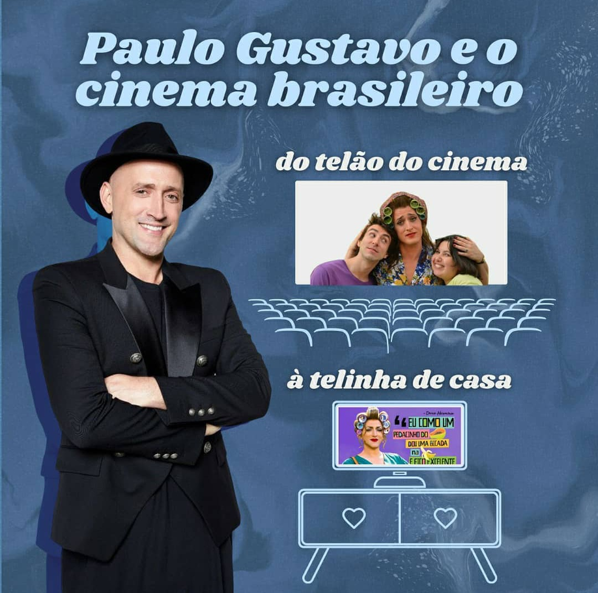

Artistas LGBTQIA+
Paulo Gustavo
O querido e eterno Paulo Gustavo encantou o mundo com a sua personagem Dona Hermínia. Paulo Gustavo foi um artista brilhante e de extrema importância para a comunidade LGBTQIA+. Fez diversos papéis, foi das grandes telas de cinema para as pequenas telinhas na nossa casa. Esse ícone de artista reunia todos em frente a tv para lhe assistir, não importava se fazia ou não parte da comunidade. Paulo Gustavo deixou um legado para aqueles que ficaram nesse mundo.
"O humor salva, transforma, alivia, cura, traz esperança para a vida da gente. Rir é um ato de resistência!" - Paulo Gustavo
clique na imagem para acessar a publicação do Coletivo Matheusa Passarelli
Que tal mais um pouco de representatividade brasileira? Bom, aqui estão alguns nomes de artistas lgbtqia+ brasileiros!